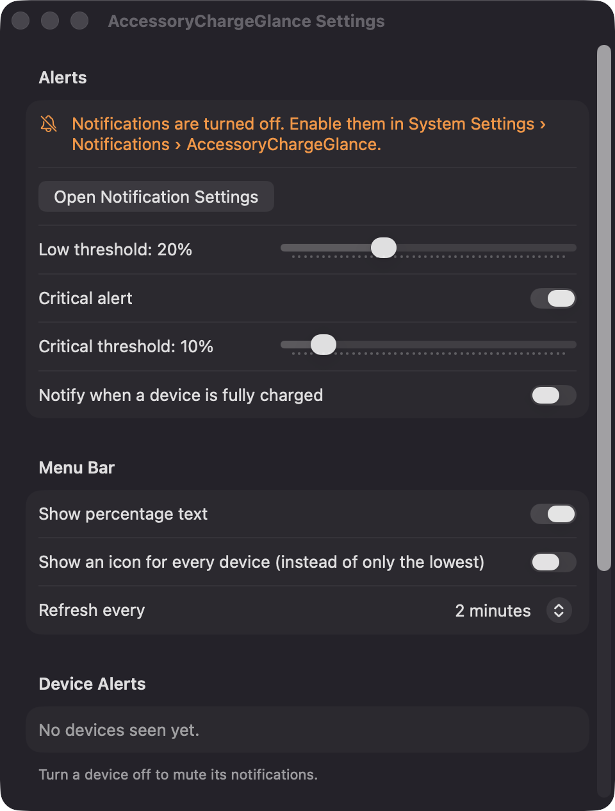
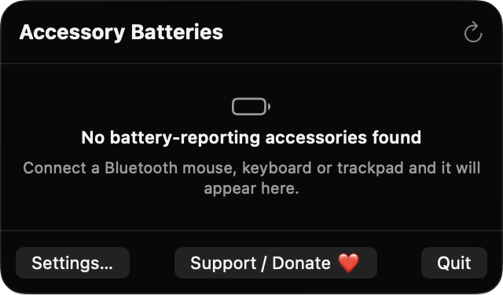

Lowest battery at a glance
The menu bar item shows the lowest percentage among connected accessories. You can hide the text or show an icon for every device instead.
Open source · macOS 14+ · Universal binary · Battery & Power
AccessoryChargeGlance puts the lowest battery among your Bluetooth mice, keyboards and trackpads in the menu bar. Click it for the full list, and get an alert before something dies.
Free & MIT licensed · Apple Silicon & Intel · Latest release

Features
A focused battery readout and alerts, without pairing, handoff or background network traffic.
The menu bar item shows the lowest percentage among connected accessories. You can hide the text or show an icon for every device instead.
Each accessory appears with its name, a device-type symbol, a colored battery bar and its percentage, sorted lowest first. A bolt marks devices that are charging.
Local notifications fire at 20% and 10% by default, adjustable from 5 to 50%. Each alert fires once per drop, and an optional alert tells you when a device reaches 100%.
The last known level of each device is remembered, so disconnected accessories show dimmed with a last-seen time. Readings older than 30 minutes get a clock marker.
Mute alerts per device, choose a refresh interval of 1, 2 or 5 minutes, and enable launch at login. Refreshes also happen when a Bluetooth device connects or disconnects.
Built only with Apple frameworks, with no third-party dependencies, analytics or network calls. The full source is available under the MIT license.
Screenshots

Install
AccessoryChargeGlance is open source and not notarized with a paid Apple Developer ID, so macOS needs one extra step the first time.
xattr -cr /Applications/AccessoryChargeGlance.app
Download
Free, forever. Built for macOS 14 Sonoma or newer, Apple Silicon and Intel.
Not notarized: on first launch right-click AccessoryChargeGlance.app → Open.
FAQ
Yes. It is free to use and released under the MIT license, with the full source on GitHub. There are no accounts, subscriptions or paid tiers, and an optional Support button links to Ko-fi if you want to chip in.
It does not need Accessibility, Screen Recording or Microphone access. macOS may ask for Bluetooth access, so the app can read the names and connection state of your paired accessories, and for Notifications so it can send alerts. Launch at login is only used if you turn it on.
On your Mac only. Settings are kept in the app's preferences, and the last known battery level of each device is saved as a small JSON file in Application Support. The app makes no network calls.
Notarization requires a paid Apple Developer account, and this is a free open-source project. Right-click the app and choose Open once to get past Gatekeeper, or build it yourself from source with Xcode.
Yes. AccessoryChargeGlance was generated by Claude Code from a written spec as a clean-room reimplementation, with no code or assets from any commercial app. The full source is on GitHub under MIT, so you can read every line before you run it. It has had less human review than a hand-written app, so bug reports are welcome.
Support ❤️
AccessoryChargeGlance is a free, open-source alternative to paid utilities. If it earns a spot on your Mac, a coffee keeps the updates coming.
☕ Support Or on Ko-fi